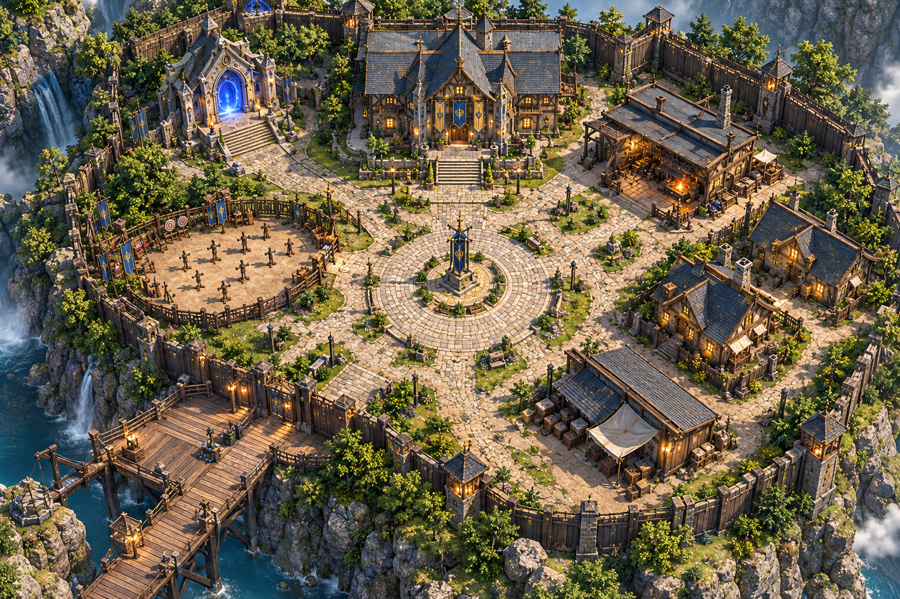

Aayush
Consultant by day. I photograph, and I build tools, games, and extensions by night.

Select a building to explore
Consultant by day. I photograph, and I build tools, games, and extensions by night.

Select a building to explore